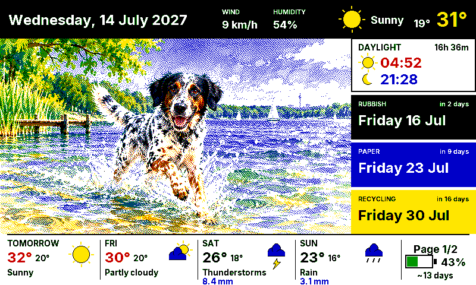
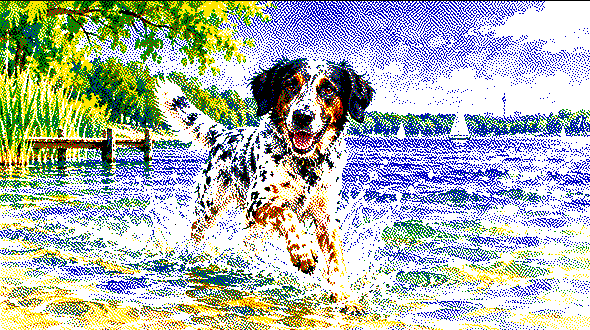

Spring rain, 6 to 14 °C
Comic book ink. Rain outside, so it paints umbrellas.
For and reTerminal
Every morning a model draws your dog in today's weather and a new art style. An e-paper panel shows it with the forecast and the bins, then sleeps until tomorrow.


As drawn On the panelRain puts rain in the scene and moves the work indoors. Sun sends the dog to the lake. A cold morning puts a coat on. The sky in the picture is the sky outside.
Every morning picks a style from a pool you write yourself, least recently used first. The weather decides what the dog is doing.
Comic book ink. Rain outside, so it paints umbrellas.
Watercolour. Thirty-one degrees means the lake.
Stained glass. Wind means leaves to chase.
Children's book. Snowing, so it bakes indoors.
The shipped pool names a medium, never a franchise, and each is drawn for six colours. Point at one to see Benny in it.
German holidays, Easter and the seasons are built in. Add birthdays and local dates, and each one brings an outfit and a scene.
Page two is the day hour by hour and the week ahead. The right button turns to it and back.
The picture costs money and takes minutes. The composite costs nothing and takes three seconds. The microcontroller does neither: it downloads a finished PNG.
On a Mac or a Linux box: the forecast, a style, the calendar and two model calls. The picture goes to Home Assistant.
The generatorThe integration lays out the picture with the weather, the bins, the sun and the battery, and dithers it into one PNG.
The dashboardThe reTerminal wakes, asks for a render, downloads the PNG, paints it and sleeps for the next 23.9 hours.
The firmware| Panel | reTerminal E1002 · 7.3" Spectra 6 · 800×480 |
|---|---|
| Board | ESP32-S3 · ESPHome |
| Battery | 2000 mAh · USB-C |
| Sensors | SHT40 inside climate · battery ADC |
The panel wakes once a day for about forty seconds and deep-sleeps the rest.
Home Assistant, a machine for the morning job and a model you can reach. The setup guide checks every stage.
Clone, copy the examples, add four or five photos of your dog, then run --dry-run to read the prompts before spending anything.
Copy the component in or add the repository to HACS as a custom repository, add foredogs:, and call the render service once by hand.
Fill in secrets.yaml and flash e1002-kitchen.yaml with ESPHome. The first boot renders, paints and goes to sleep.
git clone https://github.com/nichtlegacy/foredogs.git cd foredogs/generator python3 -m pip install -r requirements.txt ex=../examples/generator cp $ex/config.example.json config.json mkdir -p config assets/input_images cp $ex/dogs.example.json config/dogs.json cp $ex/art_styles.example.json config/art_styles.json # photos in assets/input_images/, location in config.json python3 -m foredogs_generator.main --dry-run
action: foredogs.render_dashboard data: weather_entity: weather.forecast_home image_dir: dogs language: en # or de # then /config/www/daily_foredogs/dashboard.png # is there, 800×480, and the panel can fetch it
By default the generator drives the codex CLI. Set provider.kind to openai and point it at OpenAI, Google, OpenRouter, LiteLLM, Ollama or a local proxy instead. Providers
Reference photos go to whichever model you configure; point it at a local one if that matters to you. Names, photos, birthdays and your style pool stay in files git never tracks.
Either, per render call, and the panel above switches with it. Adding a language is one file in custom_components/foredogs/languages/.
Not a plug-in app and not a hosted service. It is a complete stack (generator, integration, firmware) that runs every morning on the author's own panel.
A fork of forecats by jwardbond, daily cat pictures in Home Assistant. Since February 2026 the generator, the renderer and the firmware have been rebuilt.
With extensive help from AI coding assistants. Both halves have test suites that run without Home Assistant installed, and the demo on this page is drawn by the same renderer.